루미 · 토끼
캐릭터 무료 · 고유 기술은 구독
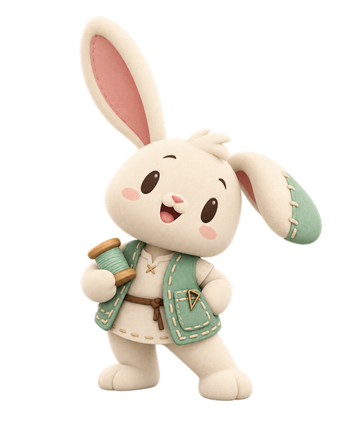
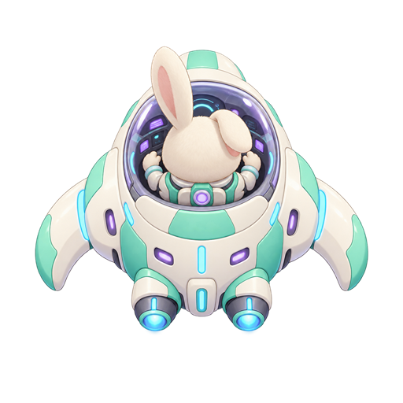
구름 스티치

2026-10-30 최신 홈·토끼/거북이·전투/음악 전후 비교
아래 이미지는 이전 리뉴얼의 보존 이력입니다. 현재 앱은 새 v2 자산과 선택 화면을 사용합니다.
귀엽고 밝은 미래형 SF · 로컬 검토본 / 미공개
기본 토끼·여우·거북이와 사격·보호막 무료. 월·연 구독은 전체 캐릭터와 고유 기술. 상품 ID 미정·실서버/스토어 미연결로 실제 구매는 잠겨 있습니다.
아래 전투는 Android 가상 앱·가상 구독 권한으로 시험한 실제 Flutter 렌더링입니다. 실기기·실제 결제/로그인 검증이 아닙니다.
검증 결과·남은 항목 · 전체 아트 검토 시트 · 가상 기기 성능 기록


캐릭터 무료 · 고유 기술은 구독


구름 스티치
캐릭터 무료 · 고유 기술은 구독
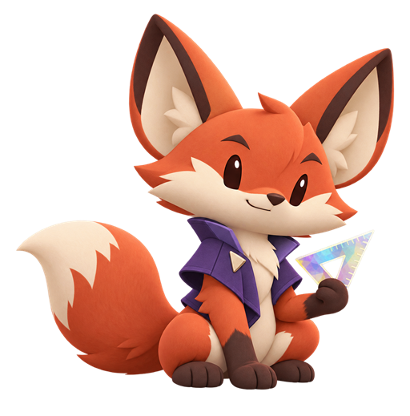
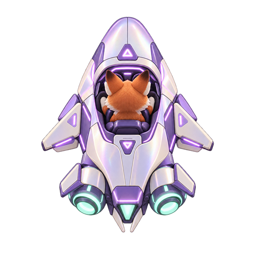
프리즘 항로

캐릭터 구독 · 고유 기술은 구독
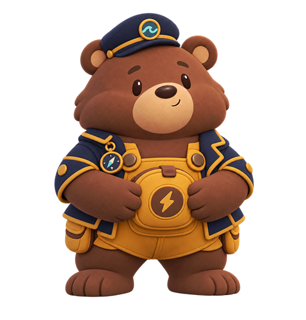
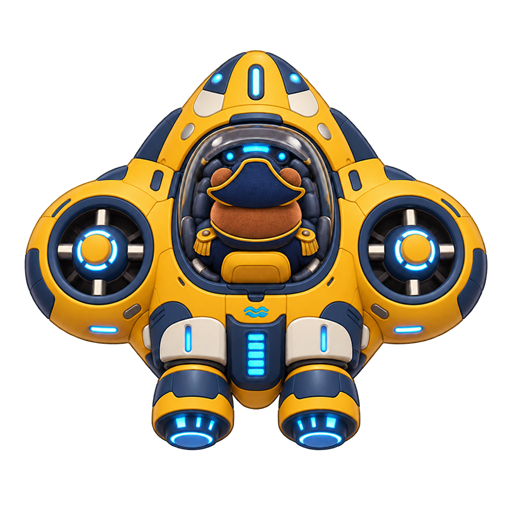
궤도 주머니

캐릭터 무료 · 고유 기술은 구독
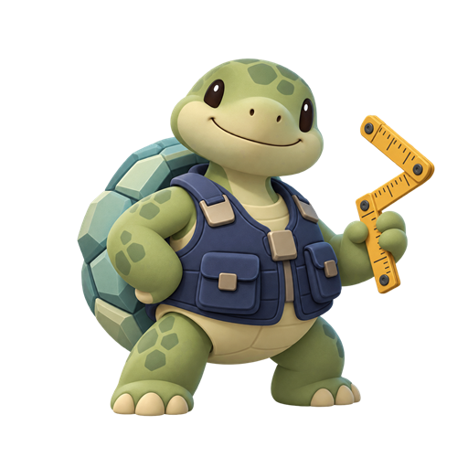
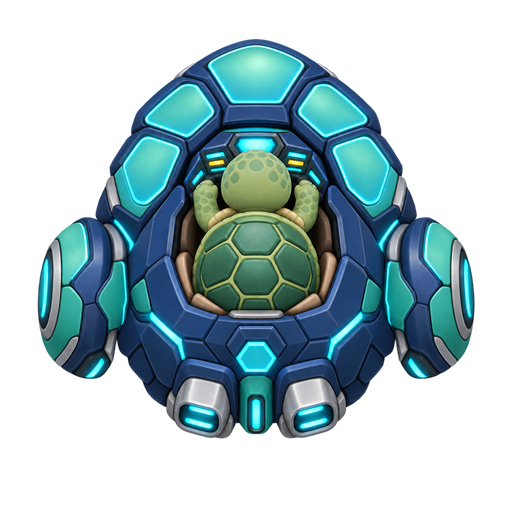
접이식 갑판

캐릭터 구독 · 고유 기술은 구독
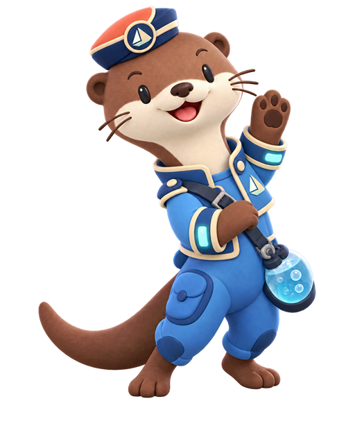
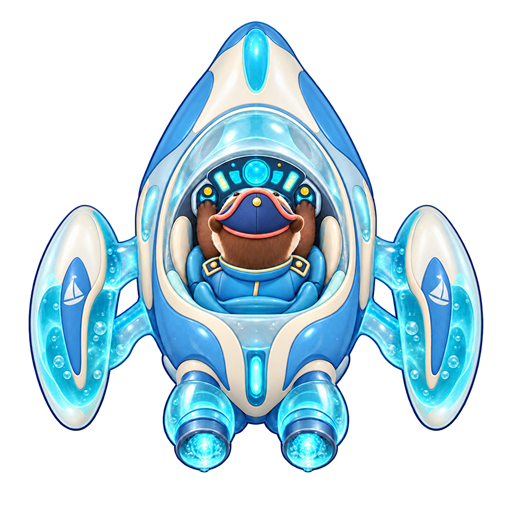
방울 릴레이

캐릭터 구독 · 고유 기술은 구독
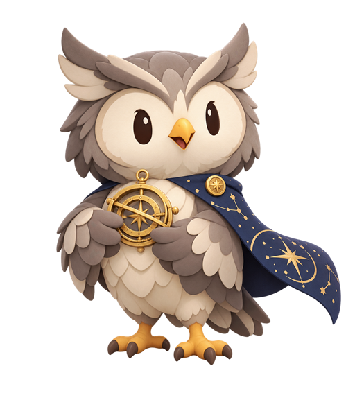
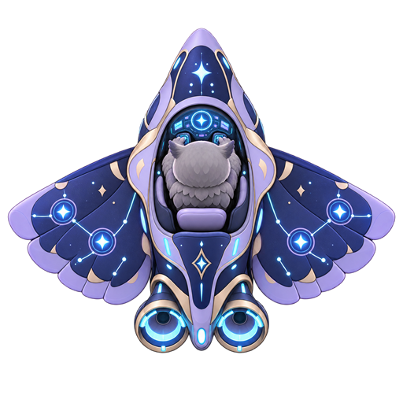
별자리 조준

캐릭터 구독 · 고유 기술은 구독
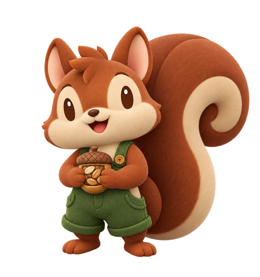
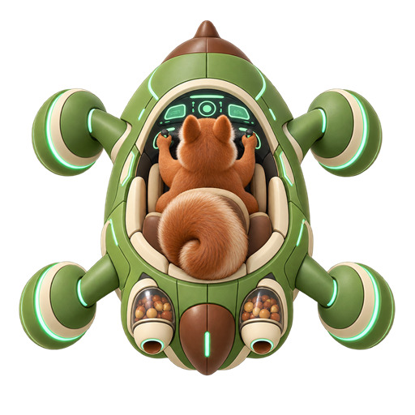
씨앗 비콘

캐릭터 구독 · 고유 기술은 구독
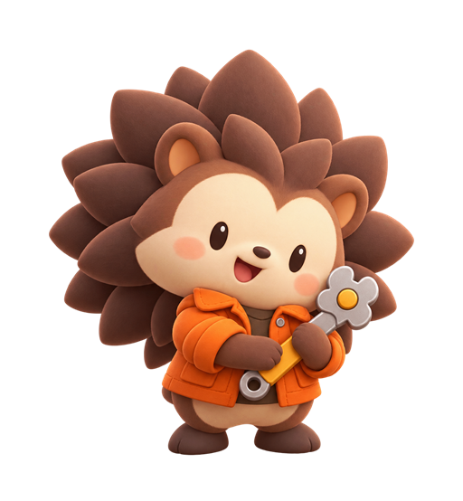
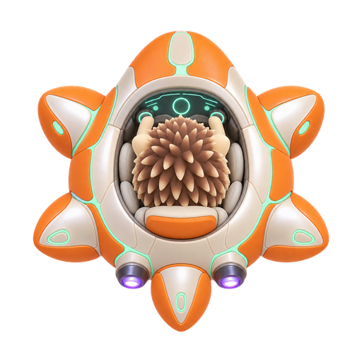
가시꽃 회전

캐릭터 구독 · 고유 기술은 구독
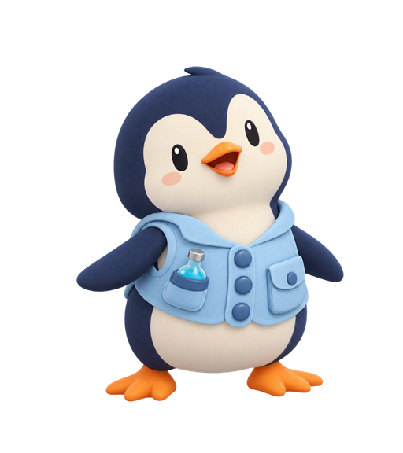
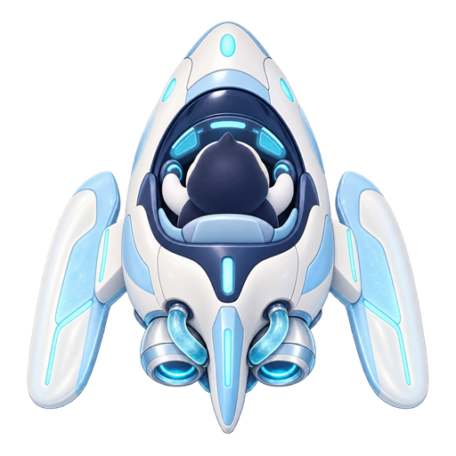
냉기 항로

캐릭터 구독 · 고유 기술은 구독
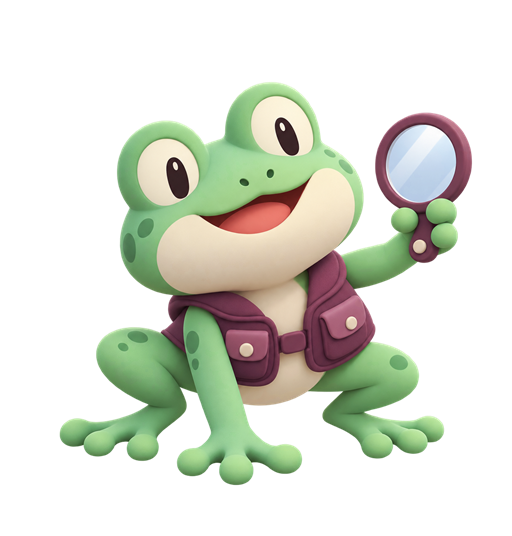
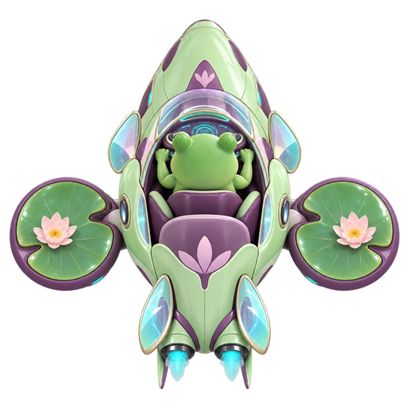
잔상 비콘

캐릭터 구독 · 고유 기술은 구독
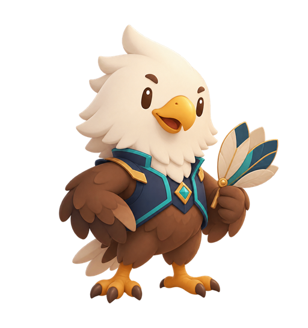
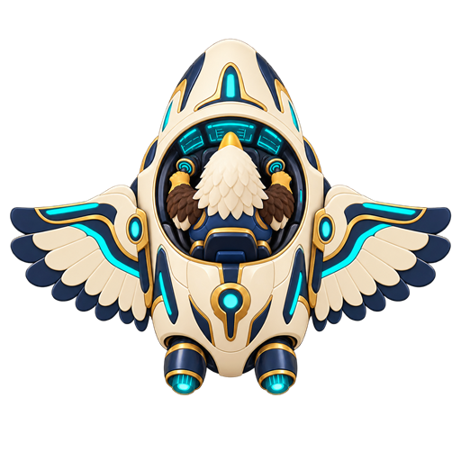
깃결 활주

캐릭터 구독 · 고유 기술은 구독
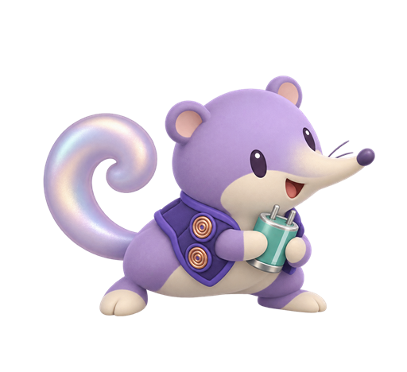
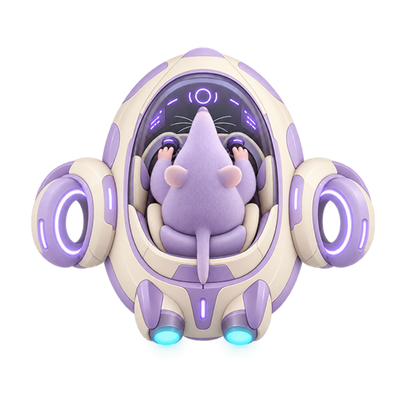
전위 박자

12종 표·실제/모의/미검증 구분 · Android 직접 실행·남은 준비 순서
무료1탄은 게임 시간273초 동안 적/체력/점수 주입 없이 자동 steering으로 보스→결과→재도전을 확인했습니다. 연구소12종의 종료는 native 버튼 발동 후 가속 모델 step 검사입니다. 실기기/실로그인/실결제나60fps 통과가 아닙니다. 해적 곰·수달은 기본 디자인이며 별도 스킨 상품이 아닙니다.
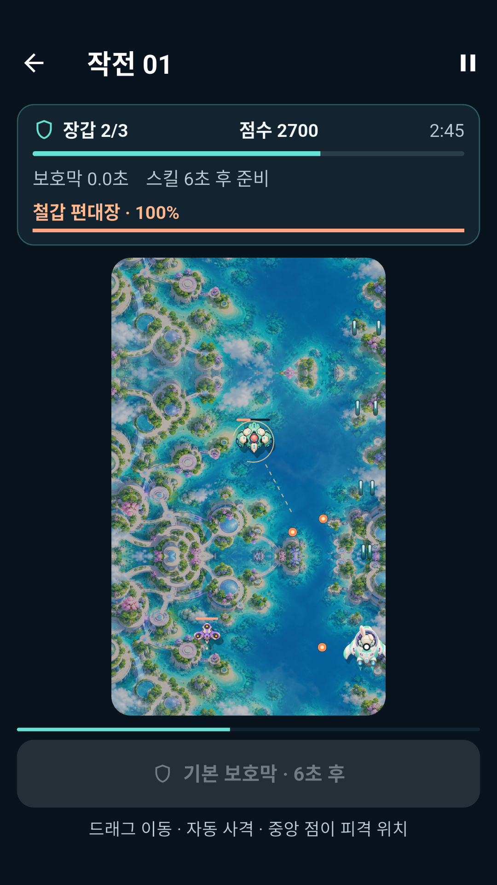
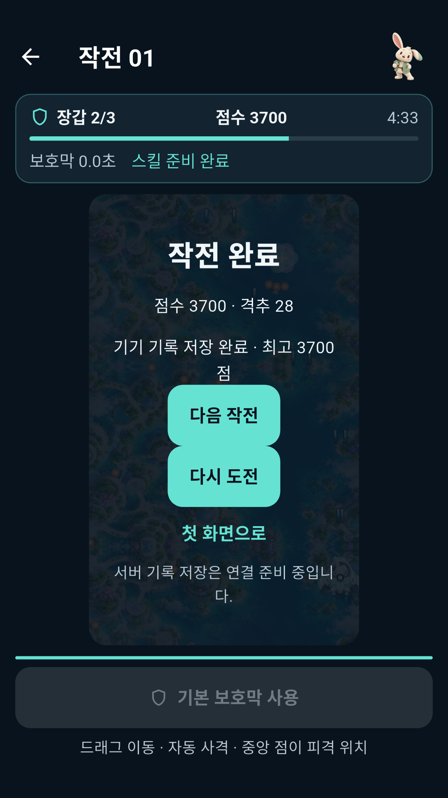
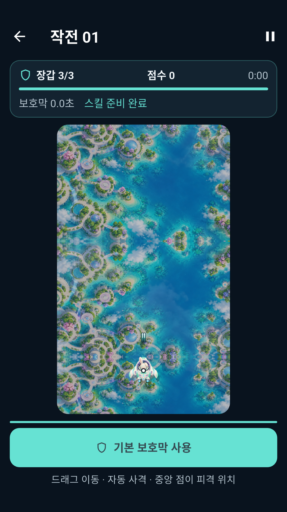
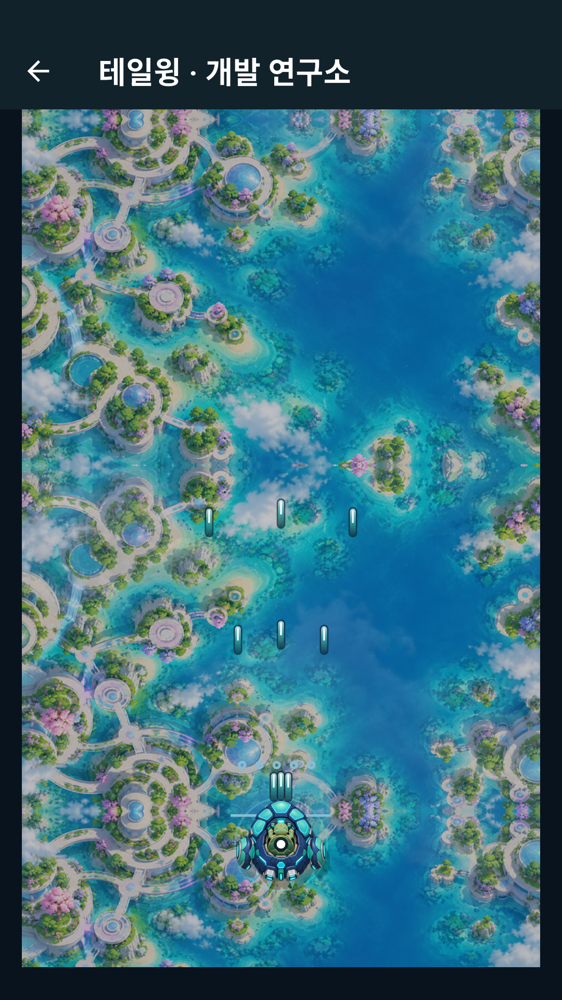
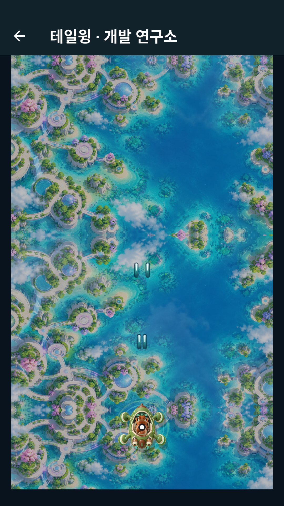
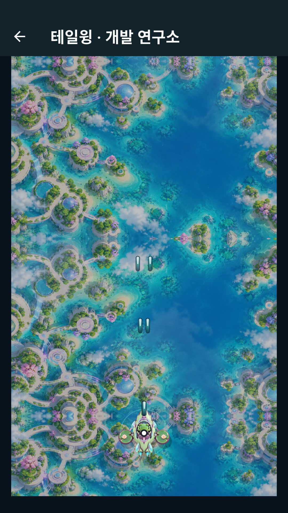
실제 인증/서버/스토어·공개 삭제 웹·iOS/실기기·16KB 기기/발열/입력 지연·장기 밸런스·보안 경고5개와 새 서명 제출 파일/스토어 아이콘·최종 소개 자료는 대기입니다. 기본 배경 한 장과5개 지역 색조를 공유하며15탄 전체의 개별 신규 배경을 만들었다고 표시하지 않습니다. 캐릭터 동작은 단일 제작 그림의 코드 기반 움직임이며 얼굴/관절별 애니메이션은 아닙니다.